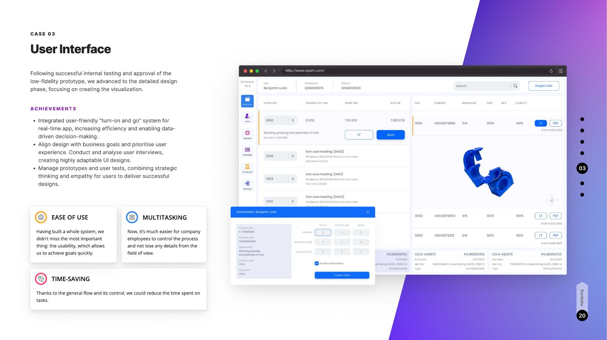

Intelligent infrastructure for manufacturing, rail transport, and digital healthcare. The hardest constraint: end users on the factory floor had little digital experience, so every insight had to be earned through research and translated into radically simple design.